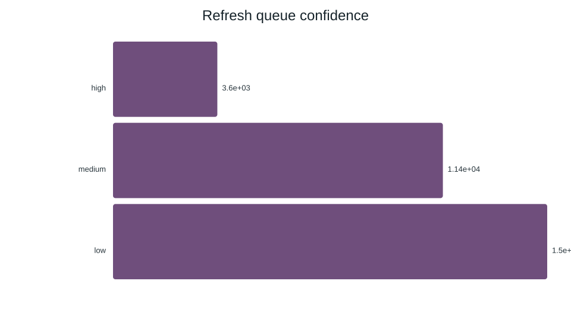
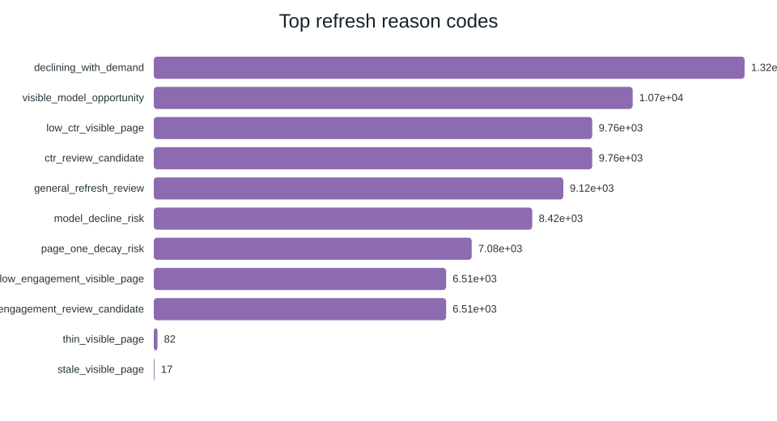
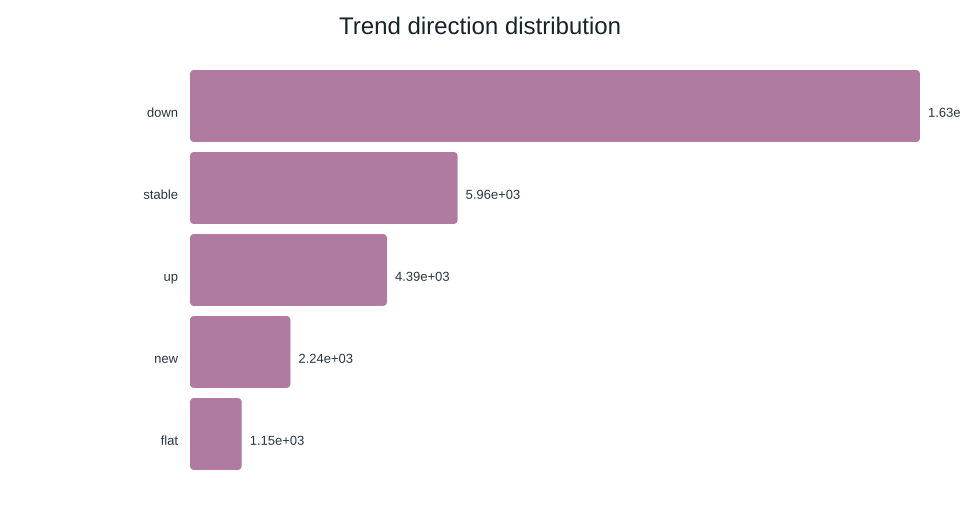

A Machine-Learning Approach to Identifying Content Refresh Opportunities
FlyRank ML Internship — Capstone Research Paper
This study evaluates a model for prioritizing content for human review. It does not establish that refreshing content causes better outcomes.
Abstract
This study investigates whether machine learning can help FlyRank prioritize content for editorial review. It uses an anonymized FlyRank ML Internship dataset containing 30,000 content-item rows. A corrected model was evaluated using a client-grouped test split and compared with a majority-class baseline. The model achieved 51.6% accuracy and an F1-score of 0.559, while the baseline achieved 51.1% accuracy and an F1-score of 0.676. These results do not establish an overall improvement over the baseline. The model should therefore remain an experimental decision-support tool requiring further validation and human review.
1. Introduction
The corrected evaluation uses a client-grouped split, with 25 clients used for training and 7 separate clients held out for testing. The model achieved 51.6% accuracy and an F1-score of 0.559, while the majority-class baseline achieved 51.1% accuracy and an F1-score of 0.676. Although the model's accuracy was slightly higher, its F1-score was lower, so the results do not establish an overall improvement over the baseline. The model should therefore be treated as an experimental decision-support tool, with human reviewers verifying recommendations before making editorial changes.
2. Data
This project uses the anonymized FlyRank ML Internship starter dataset containing 30,000 content-item rows and 44 columns. The dataset includes content-related attributes and performance signals used to explore which pages may require further editorial review.
The target label identifies whether a content item is classified as declining. In the prepared dataset, 16,262 rows are labelled as declining, representing approximately 54.2% of the records. This label is used for model evaluation; it does not prove that a content refresh will improve a page's performance.
The dataset is used for exploratory analysis and model development. Because the data is anonymized and its full collection process and time window have not been independently verified, the findings should be interpreted cautiously. Further validation on new, unseen client data is needed before using the model in a real content workflow.
3. Methodology
The project follows a supervised machine-learning workflow. The dataset is prepared for analysis, relevant features are selected, and categorical variables are encoded before model training. Potentially identifying fields and features that could introduce target leakage are reviewed and excluded where appropriate.
To evaluate generalization to unseen clients, the corrected experiment uses a client-grouped split. Data from 25 clients is used for training, while data from 7 separate clients is reserved for testing. This prevents the same clients from appearing in both sets.
The model is compared with a majority-class baseline using accuracy and F1-score. This comparison helps assess whether the model offers a meaningful improvement over a simple prediction strategy. The evaluation is preliminary and does not establish that the model will perform equally well on future data.
4. Results
The corrected evaluation compares the model with a majority-class baseline using a client-grouped test split.
Model
Accuracy
Precision
Recall
F1-score
Corrected model
51.6%
52.3%
59.9%
0.559
Majority-class baseline
51.1%
Not reported
Not reported
0.676
The model achieved slightly higher accuracy than the baseline, but its F1-score was lower. The results do not demonstrate an overall improvement over the baseline. Further validation on unseen client data is needed before practical use.
5. Discussion
The evaluation shows that the corrected model performs slightly better than the majority-class baseline in accuracy, but its F1-score is lower. Therefore, the model has not demonstrated an overall improvement over the baseline.
The client-grouped test split evaluates the model on seven clients that were not used for training. However, this is a limited test group, and the results may not generalize to all clients or future data.
The model may help identify content items for further investigation, but its predictions should be treated as experimental. Human reviewers should verify recommendations before making content changes.
5. Supporting Charts
Charts are stored in the repository under outputs/charts/. The relative paths below assume the repository is published from its root.
Action mix
Confidence mix

Top reason codes

Top feature importance
Trend distribution

6. Limitations
The results apply to the starter dataset and evaluation documented by the repository.
The exact date window and detailed validation configuration require verification.
Feature importance indicates model reliance, not causation.
Performance on other datasets, clients, or time periods has not been established.
The baseline's recall and F1-score were not reported and are not inferred here.
7. Ranked Recommendations
Review high-priority items manually and confirm a genuine issue exists.
Check content accuracy, completeness, freshness, and audience relevance.
Review impressions, clicks, engagement, and position in context.
Investigate technical issues where relevant.
Measure outcomes after approved updates and avoid assuming causation.
These are proposed review actions, not guaranteed outcomes. Human reviewers should approve every action.
8. Reproducibility
The project repository contains the model report, source notebook, and chart artifacts. Before final publication, verify the dataset release, date window, validation details, and source of every metric against the experiment artifacts.